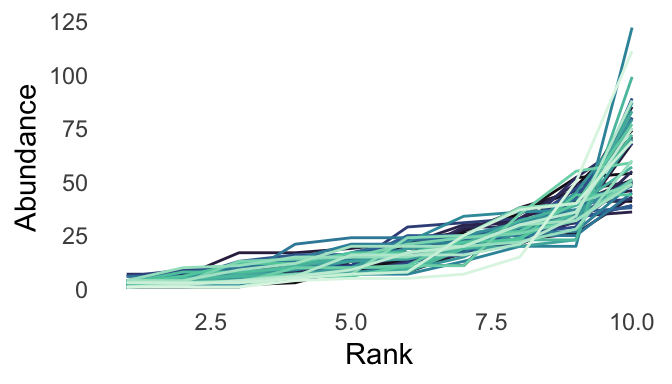

Ecological systems are notoriously difficult to predict in specific detail (e.g. the exact abundance of a particular species at a particular site), but often exhibit consistent behaviors in the aggregate (e.g. “hollow-curve” distributions of abundance across all species in a system). In this regard, ecological systems are analogous to complex systems from across the sciences. I borrow theoretical frameworks developed across the range of complex-systems disciplines to link pattern to process in community ecology.

Common patterns in ecology - such as “hollow-curve” species abundance distributions, above - result from a combination of ecological processes and ubiquitous mathematical constraints on the emergent forms for abundance distributions in complex systems in general. Historically, these mathematical constraints have presented an obstacle to using these patterns to understand ecology - but they can also be a powerful tool for detecting and diagnosing strong disruptive processes at play in ecological systems. Deviations between real patterns and their idealized theoretical forms can reflect strong ecological processes. Isolating these deviations allows for stronger inference about ecology than trying to account for the general, mathematically-determined, pattern. Using data from >20,000 ecological communities, and a little bit of combinatorics, we have shown that empirical species abundance distributions are consistently much more uneven than would be expected given the statistical constraint.
At the same time, ecological systems are different from more traditional “complex” systems in physics and statistics, and may not play by the same rules that apply in those disciplines. Ecological systems are often small, with incomplete or imperfect observations of actual organisms, and constrained by their ecological and evolutionary histories. When we borrow theoretical approaches from other contexts, we need to adapt them to work with the idiosyncracies of ecological data. This can teach us about both ecology, and about how complex phenomena come to be in the first place and when and why they break down. Building on initial work with ecological abundance distributions (above), I am exploring how the nature and inferential power of mathematical constraints on abundance distributions varies across systems of different sizes and levels of sampling resolution.
I use long-term data on the species composition, size structure, and community-level properties (species richness, total abundance, and total energy use) of ecological communities to study how communities change over time and how changes at smaller levels of organization propagate to the community scale.
Working with a 40-year experimental manipulation of the rodent community near Portal, AZ, I am investigating how environmental change and metacommunity dynamics determine the extent to which community level energy use is resilient to species extinctions.
At a cross-community, continental scale, I am investigating how the size structure of North American breeding bird communities has shifted over the past 40 years, and how these shifts modulate trends in total abundance and energy use.
Working in collaboration with members of Weecology, I am using machine learning and Bayesian changepoint analysis (implemented in the R packages LDATS and cvlt) to explore the frequency and timing of rapid reorganization events in the community composition of North American breeding bird communities.
I develop approaches and infrastructure to facilitate open, reproducible access to ecological data and to implement new statistical methods in ecology. See Software and data products for details.